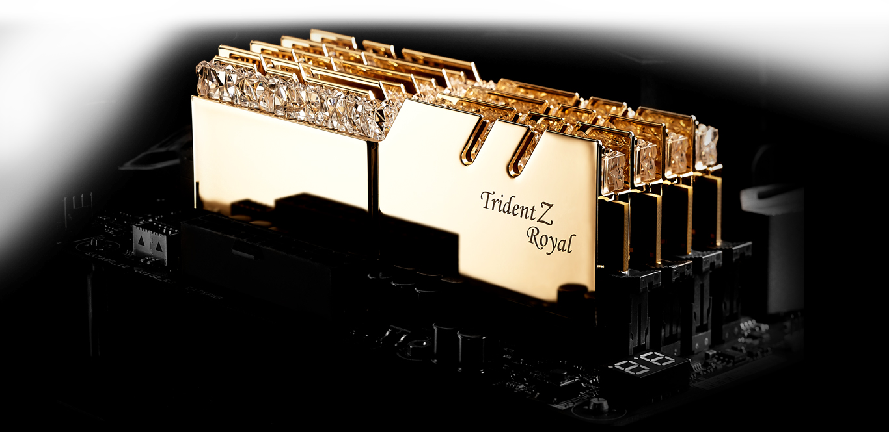
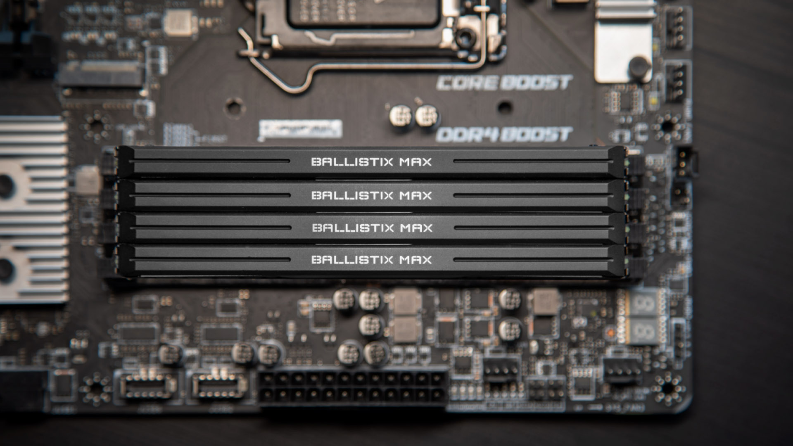

 RAM, also known as random access memory, is a very fast short term storage that allows the computer to "randomly access" pieces of information. They are stored on the motherboard, which provides power and connection to other components. The RAM holds temporary information that helps the computer run faster. Although RAM can come in large quantities, its high speeds require it to be constantly powered, also meaning it can only hold information when powered. 